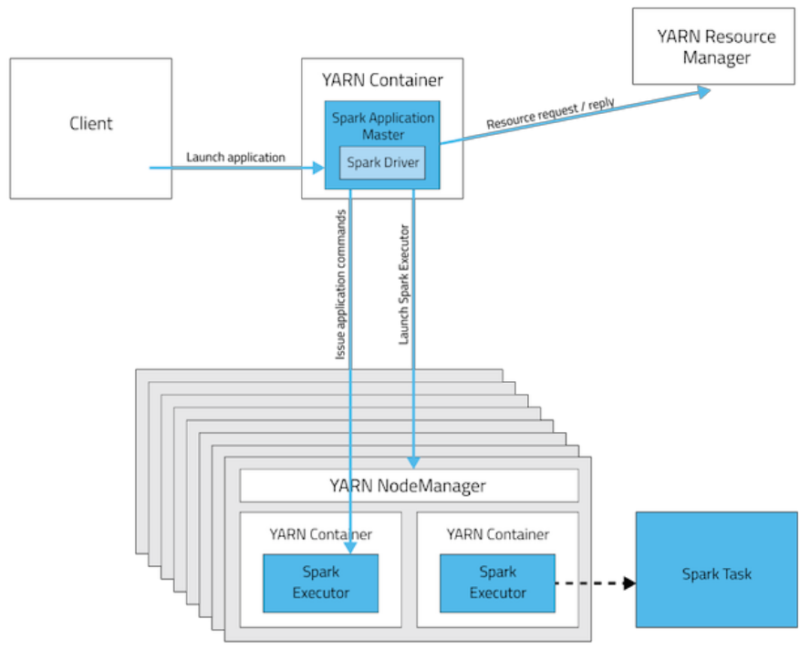
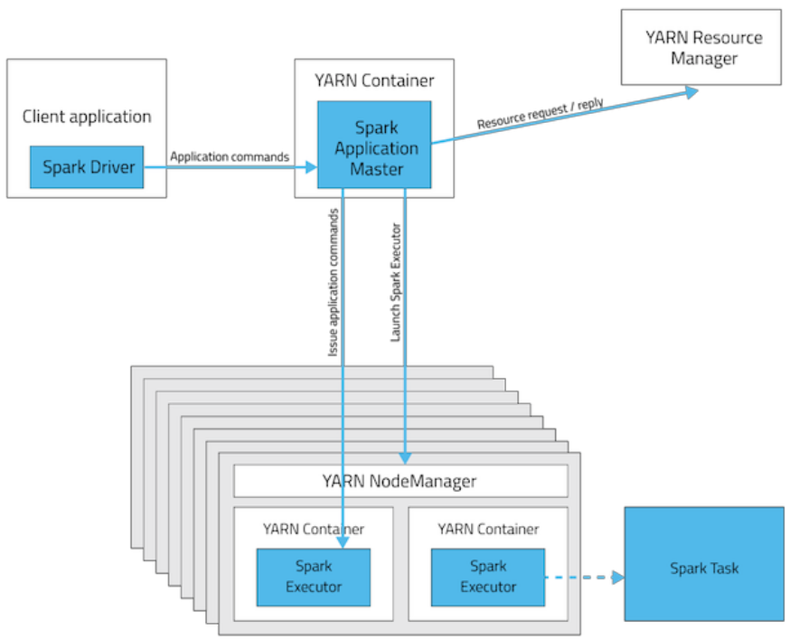

11 How to submit/execute a Spark application
Spark submit
Spark programs are executed (submitted) by using the spark-submit command. It is a command line program, characterized by a set of parameters (e.g., the name of the jar file containing all the classes of the Spark application we want to execute, the name of the Driver class, the parameters of the Spark application).
spark-submit has also two parameters that are used to specify where the application is executed.
Options of spark-submit: --master
It specifies which environment/scheduler is used to execute the application
spark://host:port |
The spark scheduler is used |
mesos://host:port |
The mesos scheduler is used |
yarn |
The YARN scheduler (i.e., the one of Hadoop) |
local |
The application is executed exclusively on the local PC |
Options of spark-submit: --deploy-mode
It specifies where the Driver is launched/executed
client |
The driver is launched locally (in the “local” PC executing spark-submit) |
cluster |
The driver is launched on one node of the cluster |
In cluster mode
- The Spark driver runs in the ApplicationMaster on a cluster node.
- The cluster nodes are used also to store RDDs and execute transformations and actions on the RDDs
- A single process in a YARN container is responsible for both driving the application and requesting resources from YARN.
- The resources (memory and CPU) of the client that launches the application are not used.

In client mode
- The Spark driver runs on the host where the job is submitted (i.e., the resources of the client are used to execute the Driver)
- The cluster nodes are used to store RDDs and execute transformations and actions on the RDDs
- The ApplicationMaster is responsible only for requesting executor containers from YARN.

Setting the executors
spark-submit allows specifying the characteristics of the executors
| option | meaning | default value |
|---|---|---|
--num-executors |
The number of executors | 2 executors |
--executor-cores |
The number of cores per executor | 1 core |
--executor-memory |
Main memory per executor | 1 GB |
Notice that the maximum values of these parameters are limited by the configuration of the cluster.
Setting the drivers
spark-submit allows specifying the characteristics of the driver
| option | meaning | default value |
|---|---|---|
| –driver-cores | The number of cores for the driver | 1 core |
| –driver-memory | Main memory for the driver | 1 GB |
Also the maximum values of these parameters are limited by the configuration of the cluster when the --deploy-mode is set to cluster.
Execution examples
The following command submits a Spark application on a Hadoop cluster
It executes/submits the application contained in MyApplication.py, and the application is executed on a Hadoop cluster based on the YARN scheduler. Notice that the Driver is executed in a node of cluster.
The following command submits a Spark application on a local PC
It executes/submits the application contained in MyApplication.py. Notice that the application is completely executed on the local PC:
- Both Driver and Executors
- Hadoop is not needed in this case
- Only the Spark software is needed